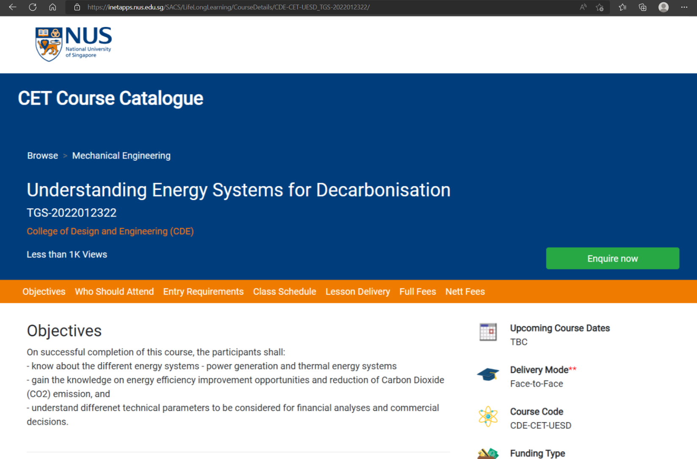
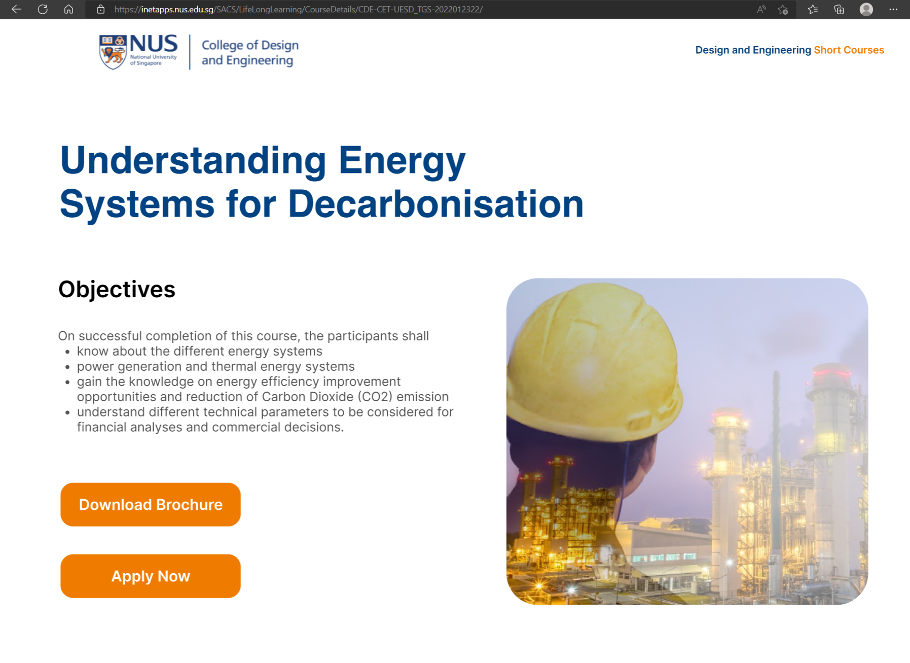

NUS CDE Short Courses: Redesigning the Course Landing Page
A work project for the National University of Singapore's College of Design & Engineering (CDE), redesigning the landing page every short course page on the CET course catalogue is built from.

One template, hundreds of course pages
Every short course under NUS CDE's Continuing Education and Training (CET) catalogue is generated from the same page template. This work project redesigned that template directly, in Figma and then implemented on the live site through WordPress, so the improvement applied across every course listed under the college at once, not just a single page.
Where the existing page was working against itself

The original course landing page template, before the redesign.
No visual element of the course
The hero banner is a flat block of institutional blue with no photo, icon, or illustration signaling what the course is about. Every course looks identical at a glance, forcing learners to read dense text just to judge relevance.
Bad layout: an overloaded hero banner
Breadcrumb, title, a long course code, the college tag, a view count, and the enquiry button are all crammed into one dense block with no visual priority, so the course title competes with meaningless metadata like "TGS-2022012322".
Bad layout: a crowded tab bar
Seven tabs, Objectives through Nett Fees, sit at equal weight in one tight horizontal strip, forcing learners to scan the whole row just to find the section they need.
Bad layout: a mismatched sidebar
Course dates, delivery mode, course code, and funding type each use a different icon style, reading as unrelated clip art rather than one coherent panel.
Why the new template works better

This is the new design proposed.
A real photo, not a blue block
A real contextual photo now sits beside the objectives, giving every course an instant visual identity instead of an identical blue block, solving the missing visual element directly.
Course code and view count removed
The new design eliminates the course code and view count entirely from the primary view, leaving only the title and a true bulleted list of objectives, so the course itself leads instead of competing with administrative metadata.
Real bullet points
Objectives are set as real bullet points with clear line spacing, replacing the old dash prefixed wall of text, so the page can be scanned in seconds rather than read start to finish.
Two clearly weighted calls to action
Download Brochure and Apply Now replace the single small enquiry button, giving the page an obvious next step instead of leaving it buried in a dense header.
A consistent two color system
Navy for content and orange for action replaces the mismatched icon set and heavy solid blue banner, so the whole page reads as one coherent template rather than several different components stitched together.
Every objective, requirement, and fee shown on the old page is still present on the new one. Nothing was removed to make the page look cleaner, it was restructured so the same information takes less effort to read.
The same information, reorganized
Both designs were annotated to isolate the exact same piece of information, course logistics and entry details, so this comparison is the same content handled two different ways, not two unrelated screenshots.


Why the new layout does better
- In the old design, the circled area is a long vertical stack of section headers, Who Should Attend, Entry Requirements, Class Schedule, Lesson Delivery, and Full Fees, several of which sit empty under the heading.
- A learner has to scroll through all of it to reach information the tab bar above already promised to jump straight to, which makes those tabs feel decorative rather than functional.
- In the new design, the same information is consolidated into two compact blocks, a four column strip for date, fees, delivery mode, and duration, followed by a clean three column layout for who should attend, entry requirements, and contact info.
- The same facts now fit in roughly a third of the vertical space, with no empty sections, and without relying on a tab bar that never actually filtered the page.
What this project made possible
Because every short course page is generated from the same template, redesigning it once in Figma and rebuilding it in WordPress carried the improvement across the entire CDE course catalogue at once. A prospective learner scanning any course under the college now gets a page led by a real photo and a scannable list of objectives, with a clear next step, instead of a dense institutional block that reads the same regardless of what the course actually teaches.
Feedback from the CDE team after launch was positive, with staff noting that the pages felt easier to present to prospective learners and easier to keep updated across such a large catalogue. Early engagement on the redesigned pages also trended upward, with more visitors scrolling to the Download Brochure and Apply Now buttons compared to the old enquiry link, and a lower drop off rate on pages that carried a course specific photo.